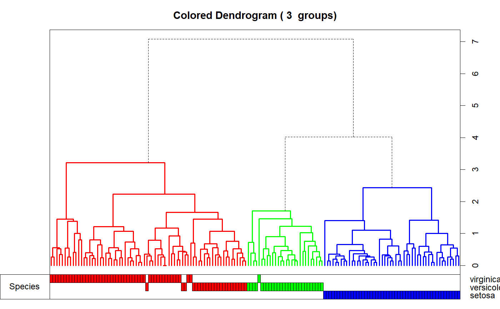
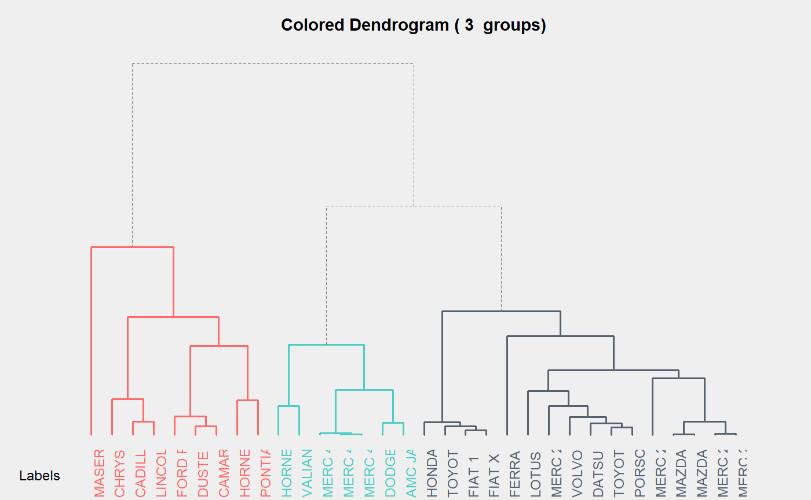
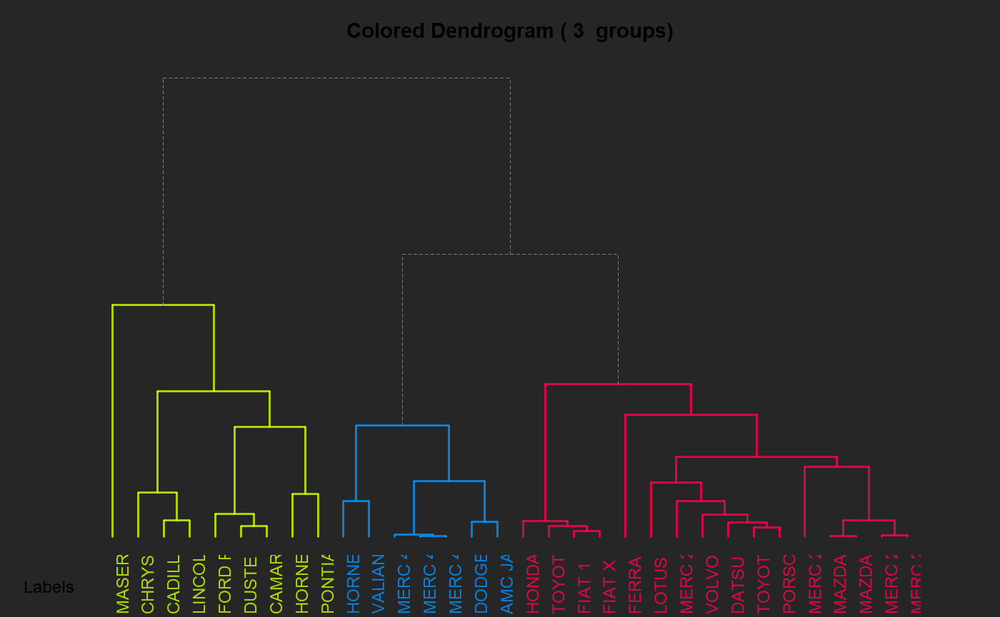
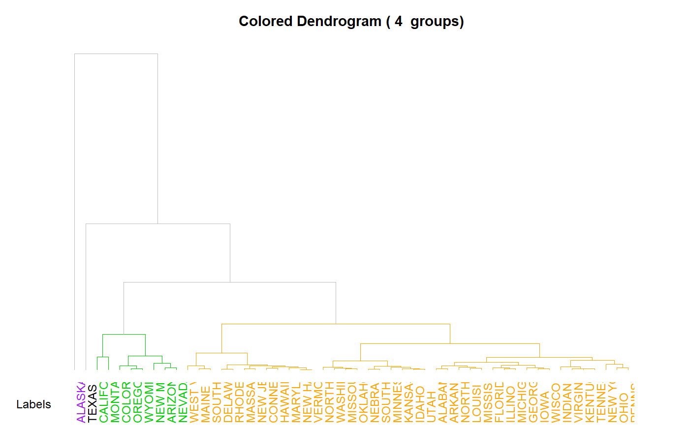
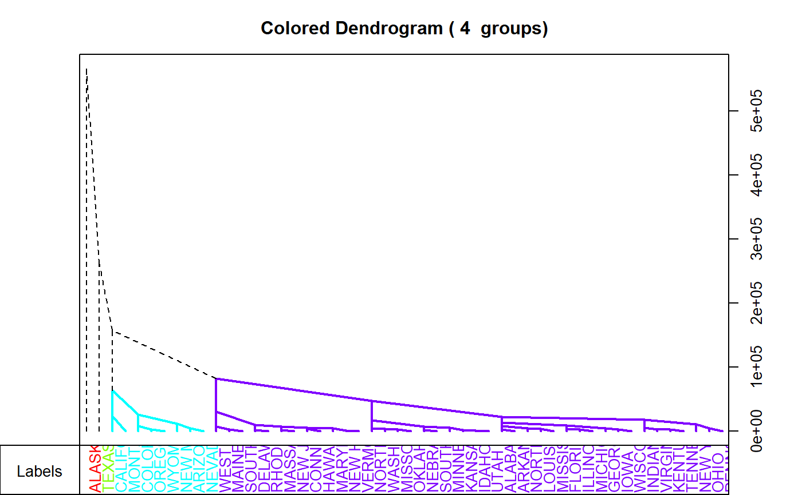
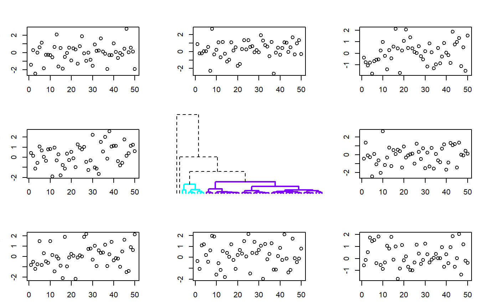
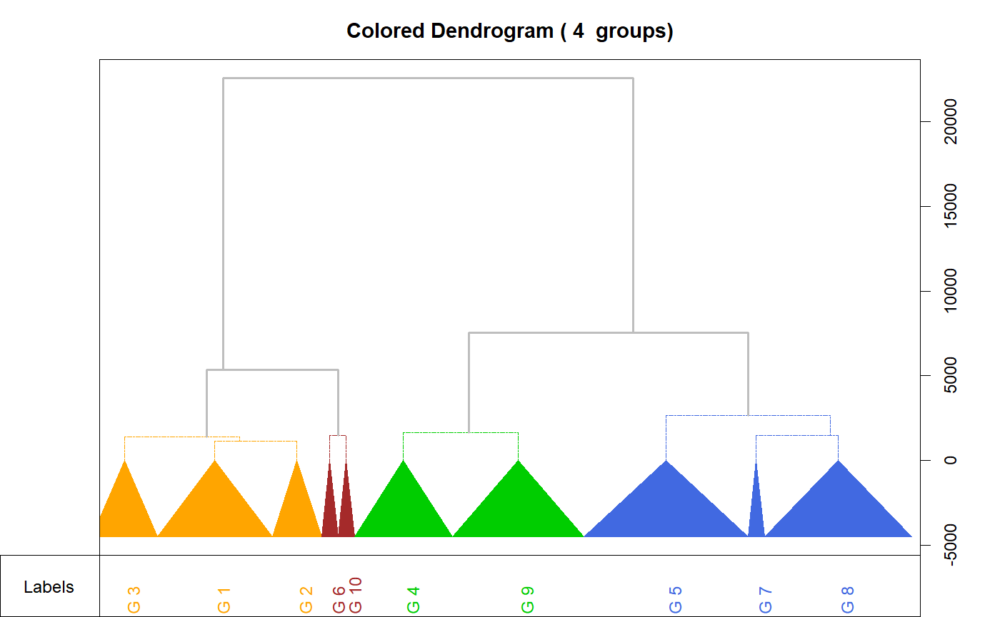

Colored dendrogram
This function plot an dendrogram with different colors to each cluster for a given number of classes. See examples.
A2Rplot(x, k = 2, col.up = "black", col.down = rainbow(k), lty.up = 2, lty.down = 1, lwd.up = 1, lwd.down = 2, type = c("rectangle", "triangle"), knot.pos = c("mean", "bary", "left", "right", "random"), criteria, fact.sup, show.labels = TRUE, only.tree = FALSE, main = paste("Colored Dendrogram (", k, " groups)"), boxes = TRUE, members)
Arguments
| x | an |
|---|---|
| k | the number of clusters |
| col.up | color for the upper part |
| col.down | a vector of colors of length |
| lty.up | line type for the upper part (see |
| lty.down | line type for the clusters part (see |
| lwd.up | line width for the upper part (see |
| lwd.down | line width for the clusters part (see |
| type | type of link ( |
| knot.pos | position of the knots: |
| criteria | vector of a criteria to draw on the left of the tree |
| fact.sup | a factor to categorize the observations |
| show.labels |
|
| only.tree |
|
| main | title of the plot |
| boxes |
|
| members | members of each terminal node (see |
Source
http://addictedtor.free.fr/packages/A2R/lastVersion/
Note
The A2R package has not been updated since January 2006 and cannot be installed anymore with a recent version of R. It's why this function has been copied here.
See also
http://rpubs.com/gaston/dendrograms, plot.hclust
Examples
# Example with iris data d <- dist(iris[,1:4],method="euc") h <- hclust(d) Species <- iris[,5] A2Rplot(h, k=3, fact.sup=Species, knot.pos="bary", show.labels=FALSE)# Examples from http://rpubs.com/gaston/dendrograms bg.def <- par()$bg hc <- hclust(dist(mtcars)) par(bg = "#EFEFEF") A2Rplot(hc, k = 3, boxes = FALSE, col.up = "gray50", col.down = c("#FF6B6B", "#4ECDC4", "#556270"))par(bg = "gray15") cols = hsv(c(0.2, 0.57, 0.95), 1, 1, 0.8) A2Rplot(hc, k = 3, boxes = FALSE, col.up = "gray50", col.down = cols)par(bg = bg.def) # Examples with state.x77 d77 <- dist(state.x77) h77 <- hclust(d77) A2Rplot(h77, k=4, knot.pos="mean", type="tri")A2Rplot(h77, k=4, lty.up=1,lwd.down=1, col.down=c("purple","black","green3","orange"), col.up="gray", boxes=FALSE)A2Rplot(h77, k=4, knot.pos="left", type="tri")# Example showing how to include this in an other layout with only.tree op <- par(no.readonly=TRUE) par(mfrow = c(3,3)) par(mar=c(3,3,3,3)) plot(rnorm(50)) # one plot plot(rnorm(50)) # one plot plot(rnorm(50)) # one plot plot(rnorm(50)) # one plot par(mar=c(1,1,1,1)) A2Rplot(h77, k=4, only.tree=TRUE, boxes=FALSE)#> NULLpar(mar=c(3,3,3,3)) plot(rnorm(50)) # one plot plot(rnorm(50)) # one plot plot(rnorm(50)) # one plot plot(rnorm(50)) # one plotpar(op) # Example using members hc <- hclust(dist(USArrests)^2, "cen") memb <- cutree(hc, k = 10) cent <- NULL for(k in 1:10){ cent <- rbind(cent, colMeans(USArrests[memb == k, , drop = FALSE])) } hc1 <- hclust(dist(cent)^2, method = "cen", members = table(memb)) hc1$labels <- paste('g',1:10) A2Rplot(hc1, members = table(memb), k=4, lwd.up = 2, lty.up=1, col.up = "gray", lwd.down = 1, lty.down='twodash', col.down = c("orange", "brown", "green3", "royalblue"), knot.pos = "bary" )